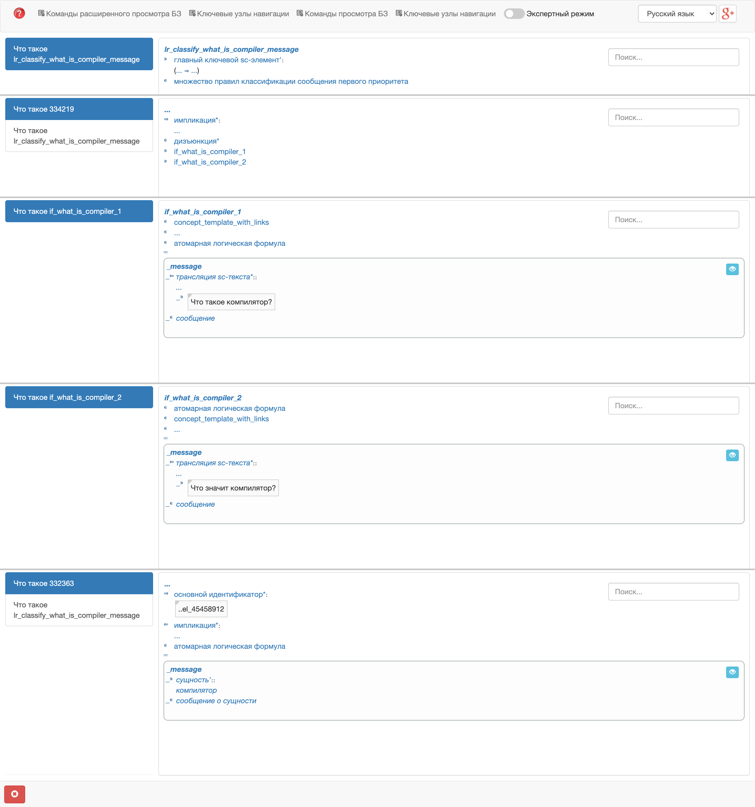
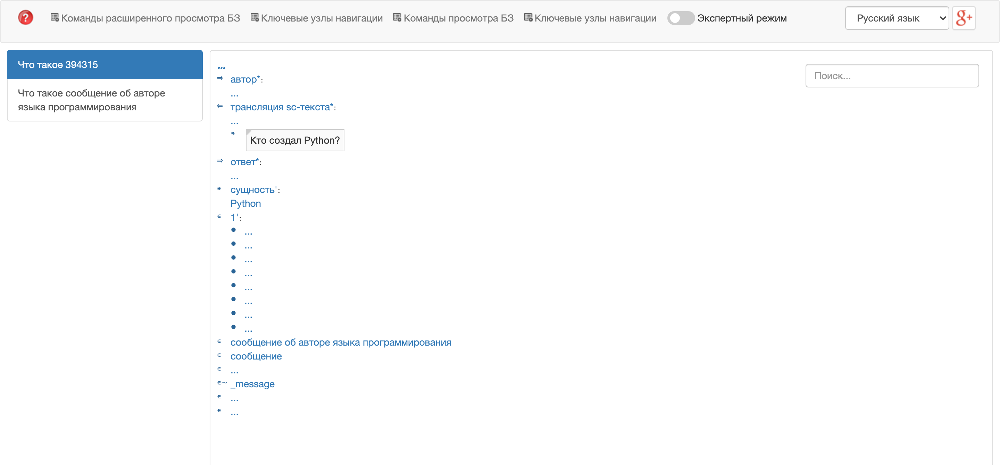

Классификация сообщений, вариант №26 — «Языки программирования». Сначала объяснение с нуля: что это за система, что сделано и как оно работает. Потом 8 вопросов преподавателя, задачи и сценарий защиты.
Это надо назвать не задумываясь
Типов вопросов реализовано
3
Правил классификации
67 файлов .gwf
Формулировок вопросов
134, по две в правиле
Свой класс сообщений
concept_message_about_author
Правило ответа / фразы
1 / 2
Множество правил
concept_classify_message_rule_priority_1
Wit.ai
не использован, no-auth
Часть I · с нуля
1. Вся работа за две минуты
Что это было, что сделано и чем закончилось.
Суть
Есть учебная система NIKA — чат-ассистент, который отвечает на вопросы не из заготовленных текстов, а из базы знаний. В первой лабораторной в эту базу были занесены знания о языках программирования: что такое компилятор, кто автор Python, какие бывают языки.
Но одних знаний мало. Когда человек пишет «Кто создал Python?», система видит просто строку символов. Чтобы ответить, ей нужно понять две вещи: что хотят узнать (автора) и о чём спрашивают (о Python). Это и есть классификация сообщения — тема второй лабораторной.
В работе система научена понимать три типа вопросов:
Автор языка программирования Python — Гвидо ван Россум.
На что декомпозируется язык программирования?
на какие виды делится понятие
язык программирования разбивается на логический язык программирования, процедурный…
Сделано это логическими правилами вида «если текст сообщения такой-то, то это вопрос такого-то класса о такой-то сущности». Правил 67, каждое знает две формулировки одного вопроса. Все 134 формулировки проверены в живом диалоге — на каждую Ника отвечает правильно.
главная мысль
Система не «угадывает» смысл. Она сравнивает текст вопроса с образцами из правил, находит совпавшее правило, по нему узнаёт класс вопроса и сущность, а потом другим правилом достаёт ответ из базы знаний.
2. Что такое NIKA
Из чего состоит система и что где открывать.
Три части системы
Часть
Что это
Простыми словами
База знаний
граф из понятий и связей между ними, записанный на языке SC-код
всё, что система знает: «Python — язык программирования», «автор Python — Гвидо ван Россум»
Решатель задач
набор программ-агентов, каждый делает одно действие над базой
то, что система умеет: распознать вопрос, найти ответ, собрать фразу
Интерфейс
окно чата и окно просмотра базы
то, что видит человек
Важно: и знания, и правила, и тексты ответов лежат в одной и той же базе знаний. Вторая лабораторная не написала ни строчки программного кода — она добавила в базу новые знания: правила распознавания вопросов.
Три адреса
Адрес
Что там
Зачем на защите
localhost:3033
диалоговое окно Ники
задать вопрос и получить ответ
localhost:8000
sc-web — просмотр базы знаний
показать правило, класс сообщений, само сообщение
localhost:8090
sc-сервер, к нему подключаются два окна выше
открывать не нужно
Система запускается четырьмя контейнерами Docker. Главный — problem-solver: при старте он собирает базу знаний из файлов и запускает агентов. Остальные три — sc-web, окно чата и агенты на Python.
3. Словарь
Слова, без которых дальше не разобраться. Десять минут — и остальное читается легко.
Из чего состоит база знаний
Слово
Что значит
Пример из работы
узел
обозначение чего угодно: предмета, понятия, отношения
python_language
дуга
связь между двумя элементами
от класса к его экземпляру
ссылка
узел с содержимым — текстом, числом, картинкой
[Что такое компилятор?]
класс (понятие)
множество однотипных объектов. Имя начинается с concept_
concept_programming_language
экземпляр
конкретный объект, элемент класса
python_language — экземпляр класса «язык программирования»
неролевое отношение
связь между двумя объектами. Имя начинается с nrel_, по-русски со звёздочкой
nrel_language_author — «автор языка программирования*»
ролевое отношение
роль элемента внутри чего-то. Имя начинается с rrel_, по-русски с апострофом
rrel_entity — «сущность'»: о чём сообщение
переменная
«любой подходящий элемент». Имя начинается с подчёркивания
_message — любое сообщение
структура (контур)
кусок графа, обведённый рамкой, с которым работают как с одним целым
посылка правила — структура «сообщение с таким-то текстом»
шаблон
структура с переменными. Система ищет в базе всё, что на неё похоже
«какое-то сообщение, текст которого — „Что такое компилятор?“»
Слова про диалог
Слово
Что значит
Пример из работы
сообщение
узел в базе, который появляется, когда человек отправил текст в чат. Текст висит на нём ссылкой
узел с текстом «Кто создал Python?»
класс сообщения
намерение: что хотят узнать. В Wit.ai это называется intent
concept_message_about_author — вопрос об авторе
сущность сообщения
о чём именно спрашивают. Привязывается к сообщению ролью rrel_entity
python_language
классификация
определить класс сообщения и его сущность
«Кто создал Python?» → вопрос об авторе, сущность Python
логическое правило
запись «если в базе есть вот это, то добавь вот это». Имя начинается с lr_
lr_classify_what_is_compiler_message
правило классификации
правило, которое по тексту сообщения назначает класс и сущность
67 файлов lr_classify_*.gwf
правило ответа
правило, которое по классу сообщения решает, какой фразой отвечать
lr_answer_about_author
фраза с шаблоном
текст ответа с пропусками ${…}, куда подставляются значения из базы
«Автор языка программирования ${_language_name} — ${_author_name}.»
агент
программа решателя, которая запускается, когда в базе появилось задание для неё
Базу знаний пишут в файлах двух видов. Оба описывают одно и то же — граф.
.scs — текстом. Так записаны понятия, экземпляры, класс сообщений, фразы.
.gwf — рисунком (внутри это XML с узлами, дугами и их координатами). Так записаны все логические правила.
Правила классификации написаны в .gwf, потому что текстовый шаблон правила из репозитория NIKA нерабочий, а графический — проверенный. Каждое из 67 правил — копия штатного рабочего правила, в которой заменены имена, сущность и два текста вопроса.
4. Что было до ЛР2
На что опирается работа. Первая лабораторная сдана.
Предметная область из ЛР1
В базу занесено 23 класса, 17 отношений и 40 экземпляров. Классы — «язык программирования», «компилятор», «парадигма программирования» и другие. Экземпляры — восемь языков, семь их авторов, организации, стандарты, инструменты. Вот как выглядит один экземпляр, язык Python, в сокращении:
python_language
<- concept_programming_language; /* это язык программирования */
<- concept_interpreted_programming_language; /* и ещё интерпретируемый */
=> nrel_main_idtf:
[Python] (* <- lang_ru;; *); /* русское название */
=> nrel_note:
[Python — высокоуровневый язык программирования общего назначения…]
(* <- lang_ru;; *); /* описание: отсюда берётся ответ на «Что такое Python?» */
=> nrel_language_author: guido_van_rossum; /* автор: отсюда ответ на «Кто создал Python?» */
=> nrel_creation_year: year_1991;;
Читается так: <- — «принадлежит классу», => — «связан отношением», в квадратных скобках — текст, ;; — конец предложения.
зачем это здесь
Ответы во второй лабораторной не придуманы заново. Они достаются из того, что было записано в первой: описание — из nrel_note, автор — из nrel_language_author, виды понятия — из nrel_subdividing.
5. Что требовалось и что сделано
Задание методички по пунктам.
Требование → результат
Что требует методичка
Что сделано
Сценарий диалога минимум из 8 сообщений: 4 вопроса и 4 ответа
Четыре вопроса, которые задействуют все три класса сообщений. Ответы в отчёте приведены дословно, как их выдала Ника
Обучить классификатор на вопрос «Что такое …?» для каждой формализованной сущности
58 правил: для всех 23 классов и 35 экземпляров. Про людей вопрос звучит «Кто такой …?»
Выделить классы и сущности сообщений; у каждого сообщения хотя бы один класс
Три класса сообщений, из них один собственный. Сущность выделяется ролью rrel_entity
Экспорт из Wit.ai в папку classification/
Не делался: Wit.ai не использован. Вместо экспорта в репозитории лежат сами правила .gwf — раздел 10
Отчёт с тестированием
Отчёт с семью рисунками
Что добавлено в базу знаний
Что
Сколько
Зачем
Правила «Что такое …?» / «Кто такой …?»
58
распознать вопрос об описании понятия или объекта
Правила «Кто создал …?»
7
распознать вопрос об авторе языка — по одному на язык, у которого автор записан
Правила «На что декомпозируется …?»
2
распознать вопрос о видах понятия — для двух понятий, у которых записано разбиение
Класс сообщений об авторе
1
в NIKA такого класса не было
Правило ответа об авторе
1
чтобы на вопрос своего класса система могла ответить
Класс фраз и две фразы с шаблоном
1 + 2
текст ответа об авторе
Всего 71 новый файл. Последние три строки формально относятся к третьей лабораторной, но без них вопрос «Кто создал …?» распознавался бы, а ответа не было бы.
Часть II · как это работает
6. Путь одного вопроса через систему
Что происходит от нажатия кнопки до ответа. Пример — «Кто создал Python?». Строки в серых блоках — настоящие записи из журнала решателя.
Шесть шагов
Сообщение попадает в базу знаний штатноеОкно чата создаёт в базе новый узел-сообщение и вешает на него ссылку с текстом. С этого момента вопрос — такой же элемент базы, как Python или компилятор. Появление сообщения запускает главного агента диалога.
MessageReplyAgent started
Text link is found
Запускается программа обработки сообщения штатноеЭто записанная в базе последовательность шагов: кого из агентов звать и в каком порядке. Первым в ней стоит агент классификации по логическим правилам, и только если он не справился — агент Wit.ai.
NonAtomicActionInterpreterAgent started
Классификация: какое правило подходит наша работаАгент берёт все правила из множества concept_classify_message_rule_priority_1 и по очереди проверяет каждое: совпадает ли текст сообщения с одним из двух образцов в правиле. У правила про Python совпал первый образец. Правило срабатывает и дописывает в базу две вещи: сообщение принадлежит классу «сообщение об авторе», его сущность — Python.
Trying to generate by formula: lr_classify_author_of_python_lang_message
Compute atomic logical formula if_author_of_python_lang_1 true
Logical formula is generated
Message is classified.
AlternativeMessageTopicClassificationAgent finished
Выбор правила ответа наша работаАгент ответа перебирает правила ответа по приоритетам. Наше правило lr_answer_about_author проверяет три условия: это сообщение об авторе, у него есть сущность, и у этой сущности в базе записан автор. Все три выполнены — правило срабатывает и указывает, из какого класса фраз брать текст.
StandardMessageReplyAgent started
Trying to generate by formula: lr_answer_about_author
Target is achieved
MessageHandler: the logic rule lr_answer_about_author is found
Сборка фразы наша работаАгент генерации берёт одну из двух фраз класса и её шаблон. По шаблону находит в базе название языка и имя автора и подставляет их вместо ${_language_name} и ${_author_name}.
MessageHandler: the phrase with the content
"Автор языка программирования ${_language_name} — ${_author_name}." is found
PhraseGenerationAgent started
Generated text: "Автор языка программирования Python — Гвидо ван Россум."
Ответ появляется в чате штатноеГотовый текст записывается в базу как ответное сообщение, окно чата его показывает.
MessageReplyAgent finished
что из этого сделано в работе
Сам механизм — агенты и порядок шагов — штатный, он был в NIKA. В работе добавлено то, чем этот механизм пользуется: правила шага 3, а для вопроса об авторе ещё правило шага 4 и фразы шага 5.
То же самое одной схемой
«Кто создал Python?»
↓ правило классификации сравнивает текст с образцами
сообщение ∈ concept_message_about_author
сообщение → rrel_entity → python_language
↓ правило ответа проверяет, что в базе есть автор
python_language → nrel_language_author → guido_van_rossum
↓ фраза подставляет русские названия в шаблон
«Автор языка программирования Python — Гвидо ван Россум.»
7. Правило классификации: разбор
Самая важная часть работы. Все 67 правил устроены одинаково, достаточно понять одно.
Что правило говорит
ЕСЛИ текст сообщения = «Что такое компилятор?»
ИЛИ текст сообщения = «Что значит компилятор?»
ТО сообщение ∈ concept_message_about_entity ← класс: вопрос о сущности
сообщение → rrel_entity → concept_compiler ← сущность: компилятор
На языке логики это импликация: посылка «если» и следствие «то». Посылка — дизъюнкция («или») двух условий, по одному на формулировку.
Как это выглядит в базе знаний

Правило lr_classify_what_is_compiler_message в sc-web. Сверху вниз: само правило, его посылка-дизъюнкция, два условия с текстами вопроса, следствие.
На рисунке пять кусков, читаются сверху вниз:
Правило. Узел с именем правила. У него есть «главный ключевой sc-элемент'» — та самая импликация (… ⇒ …), и он входит во «множество правил классификации сообщения первого приоритета».
Посылка. Узел, помеченный как «дизъюнкция*», в который входят два условия: if_what_is_compiler_1 и if_what_is_compiler_2.
Первое условие. Шаблон: «есть _message, оно принадлежит классу „сообщение“, и его текст — „Что такое компилятор?“». Подчёркивание в _message значит «любое сообщение».
Второе условие. То же самое с текстом «Что значит компилятор?».
Следствие. «То же _message принадлежит классу „сообщение о сущности“, и его сущность' — компилятор».
Что делает набор узлов правилом
Чтобы агент нашёл правило и понял, как его читать, вокруг импликации есть обвязка. Она одинакова у всех 67 правил.
Элемент
Зачем нужен
concept_classify_message_rule_priority_1
множество, из которого агент классификации берёт правила. Не входит в него — агент правило не увидит
rrel_main_key_sc_element
показывает, где у правила сама формула
nrel_implication
помечает связь «посылка → следствие» как импликацию
nrel_disjunction
помечает посылку как «или» из двух условий
atomic_logical_formula
помечает каждое условие и следствие как простое утверждение, которое можно проверить поиском по базе
concept_template_with_links
говорит, что в условии есть ссылка с текстом и сравнивать надо её содержимое
nrel_sc_text_translation
отношение, которым текст привязан к сообщению
Чем отличаются 67 правил друг от друга
Только тремя вещами: именем правила, двумя текстами вопроса и тем, что стоит в следствии — классом сообщения и сущностью.
Файл правила
Тексты в посылке
Класс в следствии
Сущность
…what_is_compiler…
Что такое компилятор? / Что значит компилятор?
о сущности
concept_compiler
…what_is_guido_van_rossum…
Кто такой Гвидо ван Россум? / Кто это Гвидо ван Россум?
о сущности
guido_van_rossum
…author_of_python_lang…
Кто создал Python? / Кто автор Python?
об авторе
python_language
…subdividing_of_programming_lang…
На что декомпозируется язык программирования? / Каким бывает язык программирования?
о разбиении
concept_programming_language
ограничение, о котором надо знать
Текст сравнивается посимвольно. «что такое компилятор?» с маленькой буквы или «Что такое компилятор» без вопросительного знака правило не узнает — проверено в диалоге, Ника отвечает фразой непонимания. Поэтому правил много и в каждом по две формулировки.
8. Три типа вопросов: откуда берётся ответ
Классификация у всех трёх наша. Различается то, кто строит ответ.
Сравнение
Что такое …?
На что декомпозируется …?
Кто создал …?
Класс сообщения
concept_message_about_entity, штатный
concept_message_about_subdividing, штатный
concept_message_about_author, свой
Правил классификации
58
2
7
Правило ответа
штатное lr_message_about_entity
штатное lr_message_about_subdividing
своёlr_answer_about_author
Фраза ответа
штатная: ${…} - ${_note}.
штатная: ${…} разбивается на $...{_subdividing}.
свои, две штуки
Что берётся из базы
описание nrel_note
разбиение nrel_subdividing
автор nrel_language_author
Первые два типа заработали сразу после добавления правил классификации: классы сообщений, правила ответа и фразы для них уже были в NIKA. Третий тип собран целиком — раздел 9.
Три особенности ответов, которые видно на экране
«компилятор - Компилятор — программа… код..» Название стоит дважды, а в конце две точки. Это штатная фраза NIKA: она пишет название, дефис, описание и точку. Описание в базе само начинается с названия и заканчивается точкой.
Декомпозиция выводит одно разбиение из четырёх. У языка программирования в базе четыре разбиения: по способу выполнения, по уровню, по типизации, по парадигме. Штатная фраза показывает одно из них.
На «Кто создал …?» ответ бывает двух видов. «Автор языка программирования Python — Гвидо ван Россум.» или «Язык программирования Python создал Гвидо ван Россум.» — система берёт любую из двух фраз класса.
Что в журнале выглядит как ошибка, но ошибкой не является
На каждый вопрос «Что такое …?» в журнале решателя появляется строка [Error]: Answer isn't found. Это нормально. Система сначала пробует фразу с определением понятия, она не собирается, и тогда берётся вторая фраза — с описанием nrel_note. Ответ в чате при этом есть.
9. Свой класс, правило ответа, фразы
Всё, что понадобилось, чтобы заработал вопрос «Кто создал …?».
Класс сообщений
Файл messages/concept_message_about_author.scs. Объявляет новое понятие «сообщение об авторе языка программирования» и включает его в число классов, которые система вообще может назначить сообщению.
concept_message_about_author
<- sc_node_class; /* это класс */
<- concept_intent_possible_class; /* это возможный класс сообщения */
=> nrel_main_idtf:
[сообщение об авторе языка программирования] (* <- lang_ru;; *);
=> nrel_wit_ai_idtf: [about_author]; /* имя для Wit.ai — по спецификации класса */
У класса есть и определение на естественном языке. Идентификатор для Wit.ai задан, потому что так положено описывать класс сообщений, хотя сам сервис не используется.
Правило ответа
Файл logic_rules/answer/lr_answer_about_author.gwf. Тоже импликация, но другая по смыслу: не «какой это вопрос», а «чем на него отвечать».
ЕСЛИ _message ∈ concept_message_about_author ← вопрос уже распознан как вопрос об авторе
И _message → rrel_entity → _entity ← у него выделена сущность
И _entity → nrel_language_author → _value ← и у этой сущности в базе есть автор
ТО создать ответное сообщение _reply_message
и связать его с вопросом отношением nrel_reply
К правилу отношением nrel_answer_pattern привязан класс фраз concept_phrase_about_author — оттуда берётся текст ответа. Правило входит во множество правил ответа второго приоритета.
зачем третье условие
Оно проверяет, что данные для ответа есть. Если спросить об авторе языка, у которого автор не записан, правило не сработает, и система ответит фразой непонимания, а не замолчит.
Фразы с шаблоном
Файл phrases/examples/concept_phrase_about_author.scs. В нём три вещи.
Две фразы — текст с пропусками:
Автор языка программирования ${_language_name} — ${_author_name}.
Язык программирования ${_language_name} создал ${_author_name}.
Структура-образец — описание того, что найти в базе, чтобы заполнить пропуски. По-русски она читается так:
есть сообщение _message
его сущность — _language
русское название _language → это ${_language_name}
автор _language — _author
русское название _author → это ${_author_name}
Объявление двух переменных_language_name и _author_name — чтобы система знала, какие места образца соответствуют каким пропускам во фразе.
Обе фразы пользуются одним образцом. Сам класс фраз объявлен в соседнем файле phrases/concept_phrase_about_author.scs.
10. Почему без Wit.ai
Про это спросят обязательно. Лучше сказать самому.
Что такое Wit.ai и что с ним случилось
Wit.ai — облачный сервис: ему показывают примеры фраз с разметкой, он обучается и потом сам определяет класс и сущности у похожих фраз. Методичка предлагает обучать классификатор именно в нём.
NIKA обращается к сервису с токеном доступа. Токен, который лежит в репозитории, сервис отвергает:
{"code":"no-auth","error":"Invalid user: FB log-in user is no longer supported"}
Поэтому использован второй способ классификации, который есть в самой NIKA, — логическими правилами. Его выполняет штатный агент AlternativeMessageTopicClassificationAgent, в базе NIKA для таких правил есть своя папка lr_alternative_classification.
Чем два способа отличаются
Wit.ai
Логические правила
Где хранится знание о вопросах
во внешнем сервисе
в базе знаний, рядом с остальными знаниями
Как «обучают»
размечают примеры фраз
пишут правило с образцами текста
Похожая, но другая формулировка
скорее всего распознает
не распознает: сравнение посимвольное
Нужен интернет и токен
да
нет
Что сдаётся в репозиторий
экспорт JSON
файлы правил .gwf
Настройки системы при этом не менялись: в программе обработки сообщения агент логических правил стоит первым, а к Wit.ai система обращается, только если ни одно правило не подошло.
сказать вслух
Штатный токен Wit.ai сервис отвергает с ошибкой no-auth, поэтому классификация сделана логическими правилами — это штатный механизм NIKA. Требование «обучить классификатор» выполнено: знание о том, как распознать вопрос, записано правилами в самой базе знаний.
11. Карта файлов
Что где лежит и что из этого сделано во второй лабораторной.
Каталог работы
kb/extra/section_subject_domain_of_programming_languages/
│
├── section_subject_domain_of_programming_languages.scs ЛР1: описание предметной области
├── concepts/ ЛР1: 23 класса
│ └── instances/ ЛР1: 40 экземпляров
├── relations/ ЛР1: 17 отношений
│
├── messages/ ЛР2
│ └── concept_message_about_author.scs свой класс сообщений
├── logic_rules/ ЛР2
│ ├── classification/ 67 правил классификации
│ │ ├── lr_classify_what_is_*.gwf 58 — «Что такое …?»
│ │ ├── lr_classify_author_of_*.gwf 7 — «Кто создал …?»
│ │ └── lr_classify_subdividing_of_*.gwf 2 — «На что декомпозируется …?»
│ └── answer/
│ └── lr_answer_about_author.gwf правило ответа об авторе
└── phrases/ ЛР2
├── concept_phrase_about_author.scs класс фраз
└── examples/
└── concept_phrase_about_author.scs две фразы и структура-образец
Всё, что лежит в kb/extra/, система подхватывает сама при сборке базы — нигде дополнительно регистрировать файлы не нужно.
Что лежит в папке ЛР2
Файл
Что это
ЛР2_Отчет.docx / .pdf
отчёт для сдачи, семь рисунков
Шпаргалка_к_защите_ЛР2.html / .pdf
этот документ
ИНСТРУКЦИЯ_ЛР2.md
как перенести папку в свой репозиторий, запустить и проверить
Скриншоты/
семь рисунков отчёта отдельными файлами
12. Как запустить и показать
Команды выполняются в каталоге репозитория nika.
Запуск
docker compose up -d --no-build # поднять систему; база знаний собирается минуту-две
docker compose ps # problem-solver должен быть healthy
Проверить, что база собралась целиком и без ошибок:
Обе команды и именно в таком порядке. Вторую забывать нельзя: агенты на Python после перезапуска решателя сами не переподключаются, и без неё Ника бесконечно «печатает» и не отвечает.
Что открыть в sc-web
В sc-web (localhost:8000) в строку поиска вводится идентификатор. То же можно открыть адресом вида localhost:8000/?sys_id=идентификатор.
Идентификатор
Что там видно
concept_classify_message_rule_priority_1
множество правил: в списке все наши lr_classify_*
lr_classify_what_is_compiler_message
правило: импликация и принадлежность множеству
if_what_is_compiler_1
первое условие правила с текстом «Что такое компилятор?»
concept_message_about_author
свой класс сообщений; после вопроса об авторе в нём появляется сообщение
concept_phrase_about_author
класс фраз и две фразы с шаблоном
python_language
экземпляр из ЛР1: описание, автор, год
Как показать, что вопрос действительно классифицирован
Задать в чате «Кто создал Python?» и дождаться ответа.
В sc-web открыть concept_message_about_author.
В списке элементов класса найти сообщение без имени — оно показано как «...» — и щёлкнуть по нему.
На странице сообщения видны текст вопроса, строка «сущность': Python» и принадлежность классу «сообщение об авторе языка программирования».

Сообщение «Кто создал Python?» после классификации: сущность' — Python, класс — сообщение об авторе языка программирования.
13. Если что-то пошло не так
Что бывает на живом показе и что с этим делать.
Признак → причина → действие
Что видно
Почему
Что делать
Enter не отправляет сообщение
так устроено окно чата
отправлять кнопкой с самолётиком
При первом открытии чата красная панель с TypeError … 'addr'
ошибка окна чата при пустой истории
закрыть панель кнопкой «Close», чат под ней рабочий
«Сформулируйте, пожалуйста, по-другому», «Я не понимаю Вас», «Извините, я не знаю, как ответить»
текст не совпал ни с одним образцом: другая буква, регистр, нет знака вопроса
набрать вопрос точно как в правиле
Вопрос набран верно, ответа нет секунд десять
решатель NIKA изредка теряет уже готовый ответ. Чаще, если задавать вопросы быстро один за другим
задать тот же вопрос ещё раз. Следующий вопрос задавать только после ответа
Ника перестала отвечать совсем
решатель завис. Это тоже ошибка самой системы, за вечер проверки случалось несколько раз
перезапустить двумя командами из раздела 12 и подождать минуту-две
Ника бесконечно «печатает» после перезапуска
перезапущен только problem-solver
docker compose restart py-sc-server
После перезапуска пропала история чата
база знаний собирается заново, сообщения в ней не сохраняются
ничего, это штатно
совет
Перед защитой перезапустить систему и один раз задать все вопросы сценария. Если спросят, почему Ника не ответила с первого раза, сказать прямо: это известная нестабильность решателя, вопрос классифицируется правильно — это видно в sc-web по сообщению и его сущности.
Часть III · защита
14. Вопросы к защите
Восемь вопросов из методички. За устные ответы — три балла из десяти.
01Что такое классификация? Какая цель задачи классификации? Как можно классифицировать сообщение?
Классификация — задача разделения множества наблюдений на группы, называемые классами, на основе анализа их формального описания.
Цель в диалоге: понять намерение пользователя, выраженное на естественном языке, и извлечь из сообщения дополнительную информацию. От результата зависит, как система ответит.
Три способа классифицировать сообщение:
по теме — определяется основная мысль, намерение (intent), и объекты, о которых речь (сущности);
по времени — событие в настоящем, прошедшем или будущем;
по типу — повествовательное, вопросительное, восклицательное.
По времени и типу классифицируют по грамматическим признакам. По теме — требуется обучение классификатора. Дополнительно выделяют признаки (traits), например эмоциональную окраску: положительную, нейтральную, негативную.
из моей работы
Использована классификация по теме. Реализованы три класса сообщений, у каждого выделяется сущность через роль rrel_entity.
02Какие функциональные возможности у сервиса Wit.ai? Какой принцип работы?
Wit.ai — открытый облачный сервис обработки естественного языка. Даёт три вещи: класс намерения (intent), сущности сообщения (entity), класс признака (trait).
Принцип работы: разработчик создаёт приложение, задаёт список интентов и ролей сущностей, вводит разные по формулировке фразы и размечает их — указывает интент и выделяет сущности. Модель обучается и дальше классифицирует похожие сообщения, которых в обучении не было. Система обращается к сервису по HTTP, передавая текст и токен доступа, и получает JSON.
Есть встроенные предобученные сущности: персона, время, расстояние, число, место, деньги, электронная почта. Методичка разрешает ими пользоваться, но не более двух.
сказать вслух
В моей работе Wit.ai не использован: токен, который лежит в репозитории NIKA, сервис отвергает — API возвращает no-auth, «FB log-in user is no longer supported». Применена альтернативная классификация логическими правилами — она предусмотрена самой системой NIKA: в её базе знаний есть штатная папка таких правил lr_alternative_classification.
03Алфавит ядра SC-кода и алфавит SC-кода: что из себя представляют, в чём различие?
Алфавит ядра — минимальный набор типов sc-элементов, достаточный, чтобы записать любое знание:
sc-узел;
sc-коннекторы: sc-ребро (неориентированная связь) и sc-дуга (ориентированная), в том числе дуга принадлежности;
sc-ссылка — файл с содержимым на внешнем языке.
Полный алфавит SC-кода — расширение ядра за счёт типизации: константность и переменность, постоянство и временность, позитивность, негативность и нечёткость дуг принадлежности, типы узлов — класс, структура, кортеж, ролевое и неролевое отношение.
Различие: ядро универсально и минимально, полный алфавит добавляет уточнения, которые не расширяют выразительную силу, но делают тексты компактнее, а обработку эффективнее. Любой текст расширенного алфавита разворачивается в текст ядра.
04На чём основаны направления расширения Ядра SC-кода?
На типизации sc-элементов по двум линиям:
синтаксическая — уточняется вид элемента: константа или переменная, постоянный или временный, какого типа узел;
семантическая — элемент относится к классу через принадлежность, и его смысл задаётся связями в базе знаний.
Смысл расширений в том, чтобы часто встречающиеся конструкции записывать одним элементом вместо развёрнутой подструктуры. Выразительности это не добавляет — повышает удобство записи и скорость обработки.
05Приведите классификацию интеллектуальных систем
интеллектуальная справочная — навигация по материалу и ответы на вопросы по нему;
интеллектуальная обучающая — обязательно реализует функции справочной, плюс обучает;
интеллектуальная экспертная — знания об узкой трудно формализуемой области, умеет объяснять решения;
системы поддержки принятия решений;
диалоговые системы и интеллектуальные ассистенты;
многоагентные и робототехнические системы.
из моей работы
NIKA — обучающая экспертная система и одновременно диалоговый ассистент.
06Что такое экспертная система? В чём её отличительная особенность?
Экспертная система — интеллектуальная система, включающая знания об определённой слабо структурированной и трудно формализуемой узкой предметной области и способная предлагать пользователю разумные решения.
Отличительная особенность — способность объяснять решение, а не только выдавать результат. Обычная программа даёт ответ, экспертная система показывает, на основании каких знаний и по какой цепочке рассуждений он получен.
сказать вслух
В моей работе это видно: ответ строится не готовой строкой, а выводом по базе знаний — правило находит связь «автор языка программирования*», и фраза подставляет найденное значение. Можно проследить, откуда взялся ответ.
07Какие существуют формы представления знаний? Какая используется в работе?
логическая — исчисление предикатов;
продукционная — правила вида «если … то …»;
фреймовая — структуры-фреймы со слотами;
семантические сети — граф из понятий и связей;
онтологии.
В работе используются две формы. Основная — семантическая сеть: SC-код графовый язык, знания представлены узлами и связями. Правила классификации и ответа записаны в продукционной форме — как импликации «если текст сообщения такой, то класс такой».
08Какие требования учитывать при составлении и формализации диалога?
каждое сообщение должно иметь хотя бы один класс;
классы должны быть осмысленными и различимыми между собой;
для одного класса задаётся несколько формулировок — пользователь спросит по-разному;
сущности выделяются как существительные в именительном падеже;
ответ должен опираться на знания, реально имеющиеся в базе;
диалог должен быть связным: ответ соответствует заданному вопросу;
при нераспознанном сообщении система выдаёт фразу непонимания, а не молчит.
из моей работы
В каждом правиле задано по две формулировки одного вопроса: «Что такое компилятор?» и «Что значит компилятор?». Сущности выделены в именительном падеже, как требует методичка.
15. Задачи
Формализовать сообщение с выделением сущности. Важен метод, а не заученный ответ.
Метод
определить тип сообщения: вопрос, команда, утверждение;
определить класс сообщения по теме — о чём оно;
выделить сущности — ключевые объекты, о которых речь;
при необходимости выделить признак (trait), например вежливость;
записать на SCs: сообщение принадлежит классам, текст подключён через nrel_sc_text_translation, сущности выделены ролью rrel_entity.
Задача «е» — три момента сразу: две сущности (устройство и помещение), обращение «Алиса» сущностью не является, и есть признак вежливости из-за слова «пожалуйста». Это разобранный в методичке пример, его вероятнее всего и дадут.
Задачи «г» и «д» — самые простые: обе относятся к штатному классу concept_message_about_entity, тому же, что «Что такое компилятор?» в моей работе.
Задачи «а» и «в» — сущность выделяется встроенной сущностью Wit.ai: время в «а», число в «в». Методичка разрешает встроенные сущности, но не более двух.
Задача «б» — две сущности, вторая уточняет место. Если такого класса в базе нет, ответить система не сможет, и это нормально: формализация сообщения и наличие знаний для ответа — разные вещи.
16. Сценарий защиты
Порядок, в котором показывать.
1Живой диалог
Открыть localhost:3033 и задать три вопроса подряд:
Что такое компилятор?
Кто создал Python?
На что декомпозируется язык программирования?
Отправлять кнопкой, Enter не работает. Следующий вопрос — только после ответа на предыдущий. Если ответа нет секунд десять — задать тот же вопрос ещё раз: решатель NIKA изредка теряет уже построенный ответ, это ошибка самой системы, а не базы знаний.
сказать вслух
Реализовано три типа вопросов. Система распознаёт класс сообщения, выделяет сущность и строит ответ по шаблону из базы знаний.
2Сразу проговорить про Wit.ai
сказать вслух
Wit.ai не использовался: штатный токен из репозитория сервис отвергает с ошибкой no-auth. Конфигурацию я не менял: агент логических правил в программе обработки сообщения идёт первым, а к Wit.ai система обращается, только если ни одно правило не сработало. Вместо него применена альтернативная классификация — она предусмотрена самой системой NIKA, штатная папка правил lr_alternative_classification. Правила лежат в множестве concept_classify_message_rule_priority_1, его читает штатный агент AlternativeMessageTopicClassificationAgent.
Можно показать лог с ошибкой no-auth — это доказательство, а не оправдание.
3Правило классификации
В sc-web открыть lr_classify_what_is_compiler_message.
ЕСЛИ текст = «Что такое компилятор?» ИЛИ «Что значит компилятор?»
ТО сообщение ∈ concept_message_about_entity
сообщение → rrel_entity → concept_compiler
сказать вслух
Правило — импликация. Посылка: дизъюнкция двух шаблонов с текстами вопроса. Следствие: класс сообщения и выделенная сущность через ролевое отношение rrel_entity.
4Свой класс сообщений
Открыть concept_message_about_author.
сказать вслух
Собственный класс. Задан идентификатор для Wit.ai через nrel_wit_ai_idtf — по спецификации, хотя сервис не используется. Класс добавлен во множество concept_intent_possible_class. Есть определение с переводом на естественный язык.
5Как строится ответ
Открыть concept_phrase_about_author.
Автор языка программирования ${_language_name} — ${_author_name}.
Язык программирования ${_language_name} создал ${_author_name}.
сказать вслух
Фраза — шаблон с подстановкой. Контур-образец ищет в базе цепочку: сообщение → выделенный язык → его русский идентификатор → автор через отношение «автор языка программирования*» → идентификатор автора. Найденные значения подставляются в текст.
17. Что ещё спросят
Почему 67 правил, а не одно?
Правило сопоставляет конкретный текст сообщения. «Что такое компилятор?» и «Что такое интерпретатор?» — разные тексты, значит разные правила. По две формулировки в каждом. В штатной базе NIKA сделано так же.
Для чего именно работает «Что такое …?»
Для всех 23 классов и 35 экземпляров: языки, авторы, организации, стандарты, реализации, библиотеки, инструменты, парадигмы. Про людей вопрос звучит «Кто такой Гвидо ван Россум?». Календарных годов в покрытии нет: это значения отношения nrel_creation_year, описаний у них нет и предметом вопроса они не являются.
Почему «что такое компилятор?» с маленькой буквы не распознаётся?
Правило сравнивает текст сообщения с образцом посимвольно: регистр, знак вопроса и формулировка значимы. Обобщать на похожие фразы умеет Wit.ai, логические правила — нет. Поэтому в каждом правиле по две формулировки, а на незнакомую фразу система отвечает одной из штатных фраз непонимания: «Сформулируйте, пожалуйста, по-другому», «Извините, я не знаю, как ответить», «Я не понимаю Вас».
Где здесь «обучение классификатора», если Wit.ai нет?
Знание о том, как распознать сообщение, записано правилами в самой базе знаний. Их читает штатный агент AlternativeMessageTopicClassificationAgent: он стоит первым в программе обработки сообщения, раньше агента Wit.ai.
Чем классификация отличается от ответа?
Классификация определяет класс сообщения и выделяет сущность. Ответ строится отдельным правилом по правилу вывода Modus Ponens и оформляется фразой-шаблоном. Это разные шаги: первые два типа вопросов отвечали сразу, потому что используют штатные классы с готовыми правилами ответа, а для своего класса пришлось написать и правило ответа, и фразу.
Что такое rrel_entity?
Ролевое отношение, которым в сообщении выделяется ключевая сущность. Методичка уточняет: агент классификации использует только эту роль, остальная информация берётся из базы знаний.
Почему класс сообщения — это понятие?
Это класс, множество однотипных сообщений. Конкретное сообщение пользователя — его экземпляр. Та же логика, что с абсолютными понятиями в первой лабораторной.